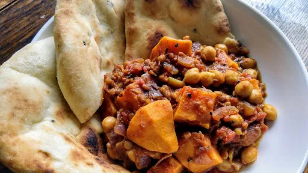

Lentil & sweet potato curry

A storecupboard spice pot with red and green lentils, chickpeas and coriander. Serve with yogurt and naan bread.
Servings: 2
Total: 35 mins
Ingredients
- 2 tbsp vegetable or olive oil
- 1 red onion, chopped
- 1 tsp cumin seed
- 1 tsp mustard seeds (any colour)
- 1 tbsp medium curry powder
- 100 g red or green lentils, or a mixture
- 2 medium sweet potatoes, peeled and cut into chunks
- 500 ml vegetable stock
- 400 g can chopped tomato
- 400 g can chickpea, drained
- ¼ small pack coriander (optional)
- natural yogurt and naan bread, to serve
Instructions
- Heat the
oil2 tbsp
in a large pan, add the onion1
and cook for a few mins until softened. Add the spices and cook for 1 min more, then stir in the lentils100 g
, sweet potatoes2 medium
, stock500 ml
and chopped tomatoes.
- Bring to the boil, then cover and simmer for 20 mins until the
lentils100 g
and sweet potatoes2 medium
are tender. Add the chickpeas, then heat through.
- Season, sprinkle with
coriander¼ small pack
, if you like, and serve with seasoned yogurt and naan bread.
-
kcal
613
-
fat
18 g
-
saturates
2 g
-
carbs
91 g
-
sugar
21 g
-
fibre
16 g
-
protein
27 g
-
salt
1.8 g
www.bbcgoodfood.com
Short Link
Long Link

 Vegetarian
Vegetarian